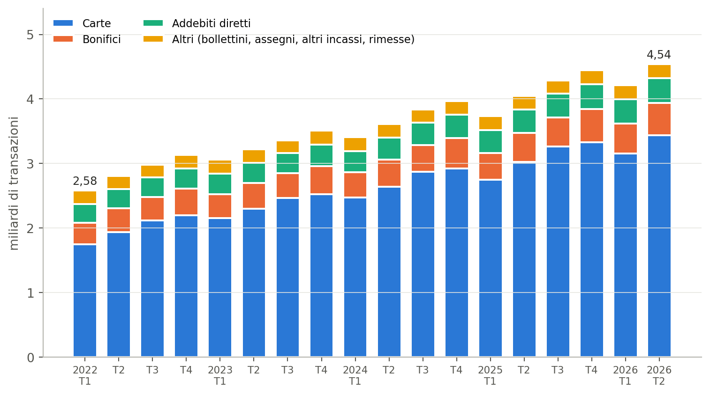
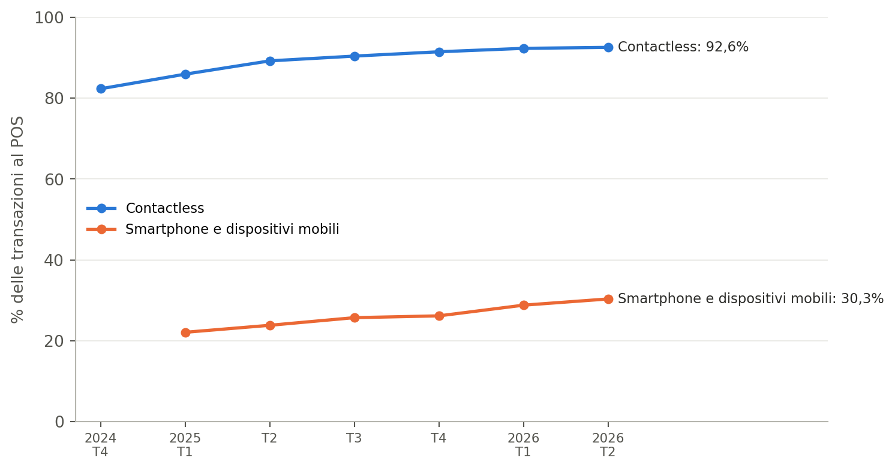
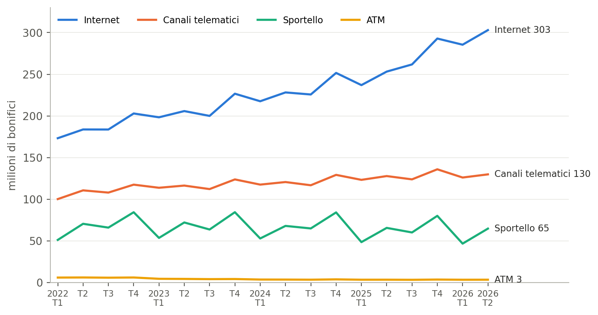
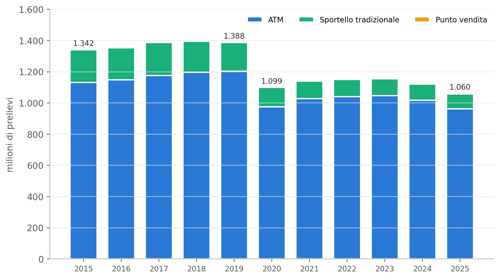

Servono ancora gli sportelli fisici? Aggiornamento sui pagamenti
Carte, bonifici, prelievi e open banking in Italia, 2015–giugno 2026
Pagamenti
Banche
Sportelli bancari
Open banking
Banca d'Italia
Al 30 giugno 2026 i pagamenti senza contante in Italia sono 4,5 miliardi a trimestre, quasi il doppio del 2022; il 93% dei pagamenti con carta nei negozi è contactless e allo sportello si fa meno di un prelievo su undici.
Paolo Volterra ![]()
Sommario
Italiano. Le statistiche della Banca d’Italia sul sistema dei pagamenti, aggiornate al 30 giugno 2026, mostrano che il numero di pagamenti diversi dal contante è passato da 2,6 miliardi nel primo trimestre 2022 a 4,5 miliardi nel secondo trimestre 2026. Le carte spiegano gran parte della crescita: nel secondo trimestre 2026 il 92,6% delle transazioni al punto vendita è contactless e il 30,3% passa da uno smartphone o da un altro dispositivo mobile. Sei bonifici su dieci sono disposti via internet, uno su otto allo sportello. I prelievi di contante sono scesi da 1,39 miliardi nel 2019 a 1,06 miliardi nel 2025; allo sportello tradizionale si fa ormai meno di un prelievo su undici. Il confronto con quanto riportato dalla stampa conferma i numeri principali e corregge tre attribuzioni. I dati descrivono la sostituzione del canale fisico sul lato dei pagamenti; non dicono nulla, da soli, su chi resta escluso.
English. Bank of Italy payment-system statistics, updated to 30 June 2026, show that the number of non-cash payments rose from 2.6 billion in the first quarter of 2022 to 4.5 billion in the second quarter of 2026. Cards account for most of the growth: in the second quarter of 2026, 92.6% of point-of-sale transactions were contactless and 30.3% go through a smartphone or other mobile device. Six credit transfers out of ten are initiated online, one in eight at the branch counter. Cash withdrawals fell from 1.39 billion in 2019 to 1.06 billion in 2025; fewer than one withdrawal in eleven now takes place at a traditional branch counter. A comparison with press coverage confirms the main figures and corrects three attributions. The data describe the substitution of the physical channel on the payments side; on their own they say nothing about who is left out.
Parole chiave
sistema dei pagamenti, carte di pagamento, contactless, bonifici, prelievi, ATM, sportelli bancari, open banking, desertificazione finanziaria
1 Perché un aggiornamento
Uno studio precedente, «Servono ancora gli sportelli fisici?» (marzo 2026), rispondeva alla domanda del titolo con «dipende da chi»: per la clientela abituata ai canali digitali lo sportello è quasi superfluo, per anziani, residenti nelle aree interne e piccole imprese in difficoltà resta difficile da sostituire. Quella analisi si fermava al 2024 e guardava soprattutto alla rete degli sportelli e alla diffusione dell’home banking.
A ottobre 2026 la Banca d’Italia ha aggiornato al 30 giugno 2026 le statistiche sul sistema dei pagamenti, con dati trimestrali e semestrali per strumento, canale e tecnologia [1]. La stampa le ha riprese sottolineando il raddoppio delle operazioni digitali e il calo dei prelievi [2].1 Questo aggiornamento riprende quei dati dalla fonte, li confronta con quanto pubblicato e li collega alla domanda iniziale.
2 Pagamenti diversi dal contante: quasi raddoppiati dal 2022
Nel primo trimestre 2022 in Italia si sono fatti 2,58 miliardi di pagamenti con strumenti diversi dal contante; nel secondo trimestre 2026 sono stati 4,54 miliardi, il 76% in più. La serie comprende carte, bonifici, addebiti diretti, bollettini, assegni e rimesse. Le carte di debito, prepagate e di credito valgono da sole 3,44 miliardi di operazioni nel trimestre più recente, cioè circa tre pagamenti su quattro. Le carte di credito entrano nella serie dal 2022, per questo il confronto parte da quell’anno.
In parole semplici: ogni barra è un trimestre; in quattro anni e mezzo i pagamenti senza contanti sono passati da circa 2,6 a circa 4,5 miliardi, e la parte blu, cioè le carte, è quella che cresce di più.
3 Carte al punto vendita: contactless e smartphone
Nel secondo trimestre 2026 le carte di debito coprono il 71,8% delle transazioni con carta al POS, le prepagate il 17,1% e le carte di credito l’11,0%. Nel primo semestre 2026 il 92,5% dei pagamenti al POS è avvenuto senza inserire la carta nel terminale e il 29,6% tramite smartphone o altri dispositivi mobili. La quota dei pagamenti con dispositivi mobili, rilevata dal primo trimestre 2025, è salita di oltre otto punti in cinque trimestri.

In parole semplici: quasi tutti i pagamenti con carta nei negozi si fanno ormai avvicinando la carta al terminale, senza inserirla; quasi un pagamento su tre si fa con il telefono, e questa quota cresce ogni trimestre.
4 Bonifici: internet prevale, lo sportello resta minoritario
Nel secondo trimestre 2026 sono stati disposti 501 milioni di bonifici: il 60% via internet, il 26% tramite canali telematici, il 13% allo sportello e meno dell’1% agli ATM. Il numero di bonifici disposti allo sportello oscilla tra 47 e 84 milioni a trimestre secondo la stagione, senza una tendenza netta; cresce invece il canale internet, che è passato da 184 milioni nel secondo trimestre 2022 a 303 milioni nel secondo trimestre 2026.

In parole semplici: i bonifici fatti da internet crescono quasi ogni trimestre, mentre quelli fatti allo sportello restano più o meno allo stesso livello e sono circa un quinto di quelli online.
5 Prelievi di contante: meno operazioni, quasi tutte agli ATM
Prima della pandemia i prelievi di contante erano stabili, intorno a 1,4 miliardi l’anno: 1,39 miliardi nel 2019. Nel 2020 sono scesi a 1,10 miliardi e da allora non sono tornati ai livelli precedenti; nel 2025 sono stati 1,06 miliardi. Questi totali comprendono tutti i canali; i soli prelievi agli ATM sono stati 1,20 miliardi nel 2019 e 0,98 nel 2020. L’ATM è il canale principale: nel 2025 ha gestito il 90,8% dei prelievi, contro l’84,3% del 2015. I prelievi allo sportello tradizionale sono passati da 211 milioni nel 2015 a 95 milioni nel 2025; quelli presso i punti vendita, come supermercati e tabaccherie, sono lo 0,3% del totale.

In parole semplici: dal 2020 si preleva meno contante; quasi tutto passa dai bancomat, mentre la parte fatta allo sportello, in verde, si è più che dimezzata in dieci anni.
6 Open banking
L’open banking consente a soggetti terzi autorizzati di accedere, con il consenso del cliente, ai dati del conto o di disporre pagamenti a valere su di esso. Le operazioni di pagamento disposte tramite questi prestatori (in sigla PISP) sono rilevate per semestre: 1.011 mila nel secondo semestre 2025 e 1.328 mila nel primo semestre 2026. Gli accessi informativi ai conti sono molto più numerosi: 283 milioni nel primo semestre 2026.
| Semestre | Pagamenti disposti tramite PISP (migliaia) | Accessi informativi ai conti (milioni) | Prestatori terzi attivi (numero) |
|---|---|---|---|
| 1° sem. 2023 | 584 | 98 | 100 |
| 2° sem. 2023 | 615 | 128 | 104 |
| 1° sem. 2024 | 598 | 168 | 106 |
| 2° sem. 2024 | 736 | 224 | 102 |
| 1° sem. 2025 | 798 | 238 | 99 |
| 2° sem. 2025 | 1.011 | 251 | 104 |
| 1° sem. 2026 | 1.328 | 283 | 102 |
In parole semplici: i pagamenti fatti attraverso app di terzi collegate al conto sono ancora pochi, poco più di un milione in sei mesi, ma crescono; molto più frequente è l’uso di queste app per leggere saldo e movimenti.
7 Confronto con quanto riportato dalla stampa
L’articolo che ha rilanciato i dati riporta correttamente l’ordine di grandezza dei fenomeni. Tre punti vanno precisati. Il primo riguarda i prelievi: i valori di circa 1,4 e 1,1 miliardi sono riferiti agli ATM [2],2 ma corrispondono al totale dei prelievi su tutti i canali. Il secondo riguarda l’open banking: le operazioni disposte tramite PISP sono descritte come vicine al milione a trimestre [2],3 mentre la serie ufficiale è semestrale e il milione è stato superato in un semestre. Il terzo è minore: la quota delle carte di debito al POS nel secondo trimestre 2026 è il 71,8%; il 71,9% indicato è il valore del primo trimestre. Il totale di 2,5–4,5 miliardi è corretto, ma comprende tutti gli strumenti diversi dal contante, anche assegni e bonifici disposti allo sportello: chiamarli «operazioni bancarie digitali» è una semplificazione.4
| Indicatore | Stampa | Dato ufficiale | Esito |
|---|---|---|---|
| Pagamenti diversi dal contante, 2022 → 2° trim. 2026 | da circa 2,5 a circa 4,5 mld a trimestre | 2,58 → 4,54 mld | Confermato |
| Quota carte al POS, 2° trim. 2026 (debito / prepagate / credito) | 71,9% / 17,1% / 11% | 71,8% / 17,1% / 11,0% | Confermato; debito 71,8% |
| Contactless e dispositivi mobili al POS, 1° sem. 2026 | 93% e 30% | 92,5% e 29,6% | Confermato |
| Prelievi 2019 e 2020 | circa 1,4 e 1,1 mld (agli ATM) | 1,39 e 1,10 mld (tutti i canali); ATM 1,20 e 0,98 | Valori riferiti al totale, non agli ATM |
| Quota ATM sui prelievi, 1° sem. 2026 | oltre l’88% | 90,8% | Confermato |
| Prelievi al punto vendita, 2025 | 0,3% | 0,28% | Confermato |
| Pagamenti disposti tramite PISP | vicini al milione a trimestre | 1,33 mln nel 1° sem. 2026 | Il milione è a semestre |
In parole semplici: la tabella mette a fianco i numeri dell’articolo e quelli della Banca d’Italia; quasi tutti coincidono, due sono riferiti a una grandezza o a un periodo diversi da quelli indicati.
8 Che cosa cambia per la domanda iniziale
I dati sui pagamenti confermano che per la maggior parte delle operazioni quotidiane il canale fisico è stato sostituito: si paga con la carta o il telefono, si dispongono i bonifici online, si preleva al bancomat. Allo sportello restano meno di un prelievo su undici e circa un bonifico su otto. Queste statistiche sono però nazionali e non distinguono per età, territorio o tipo di cliente. Non dicono quindi se la quota residua di operazioni allo sportello sia concentrata tra le persone e nei comuni che quello studio indicava come più esposti, cioè anziani, aree interne e comuni senza banca. La risposta «dipende da chi» resta valida: i dati sui pagamenti mostrano quanto sia grande la parte già passata ai canali digitali, non quanto pesi per chi non ci è passato.
Riferimenti
[1]
Banca d’Italia, «Statistiche sul sistema dei pagamenti: strumenti di pagamento alternativi al contante, bonifici e carte per canale di utilizzo, prelievi per canale, servizi di open banking». Base Dati Statistica, dati al 30 giugno 2026, 2026. Consultato: 31 ottobre 2026. [Online]. Disponibile su: https://a2a.bancaditalia.it/infostat/dataservices/export/IT/CSV/DATA/CUBE/BANKITALIA/DIFF/TSDPN020
[2]
Redazione StartupItalia, «La banca? Per gli italiani ormai è digitale: sempre più operazioni online sempre meno sportello». Consultato: 31 ottobre 2026. [Online]. Disponibile su: https://startupitalia.eu/economy/la-banca-per-gli-italiani-e-sempre-piu-digitale-sempre-piu-operazioni-online-sempre-meno-sportello/
Nota metodologica
Questo documento nasce dall’interazione di tre componenti. L’autore definisce le domande, esercita il giudizio critico e assume la responsabilità scientifica ed editoriale del risultato. Strumenti di intelligenza artificiale generativa sono impiegati a supporto della ricerca bibliografica, della lettura, della sintesi, della riorganizzazione argomentativa e della revisione del testo. Un’infrastruttura open source sviluppata dall’autore automatizza il reperimento, l’armonizzazione e il controllo dei dati dalle fonti statistiche ufficiali, e mantiene l’elaborazione documentata e riproducibile.
Le fonti sono pubblicamente accessibili e citate con la loro denominazione ufficiale; l’analisi è pertanto integralmente auditabile e replicabile da terzi a partire da esse. Le tabelle e i grafici sono elaborazioni dell’autore: calcoli, aggregazioni, trasformazioni e scelte di rappresentazione sono attribuibili all’autore e non agli enti produttori dei dati.
La responsabilità per le fonti utilizzate, le analisi condotte, le elaborazioni effettuate, le interpretazioni proposte e le conclusioni formulate resta interamente in capo all’autore. L’intelligenza artificiale è stata impiegata come ambiente di supporto cognitivo ed editoriale, non come fonte primaria, autore autonomo o sostituto del giudizio critico.
Note
«In Italia tra il 2022 e il secondo trimestre del 2026 il numero complessivo di operazioni bancarie digitali è quasi raddoppiato, passando da circa 2,5 a circa 4,5 miliardi a trimestre.» [2]↩︎
«Prima della pandemia i prelievi agli ATM si erano mantenuti sostanzialmente stabili, attorno a una media di circa 1,4 miliardi di operazioni l’anno.» [2]↩︎
«Sono cresciute anche le operazioni dispositive effettuate tramite PISP, avvicinandosi al milione a trimestre.» [2]↩︎
«nel primo semestre del 2026 il 93% dei pagamenti al POS è avvenuto in modalità contactless, mentre quelli tramite smartphone e altri dispositivi mobili hanno raggiunto il 30% delle transazioni al punto vendita.» [2]↩︎